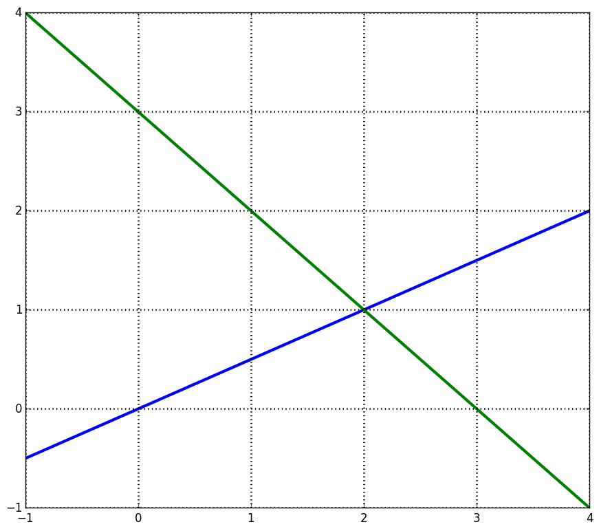
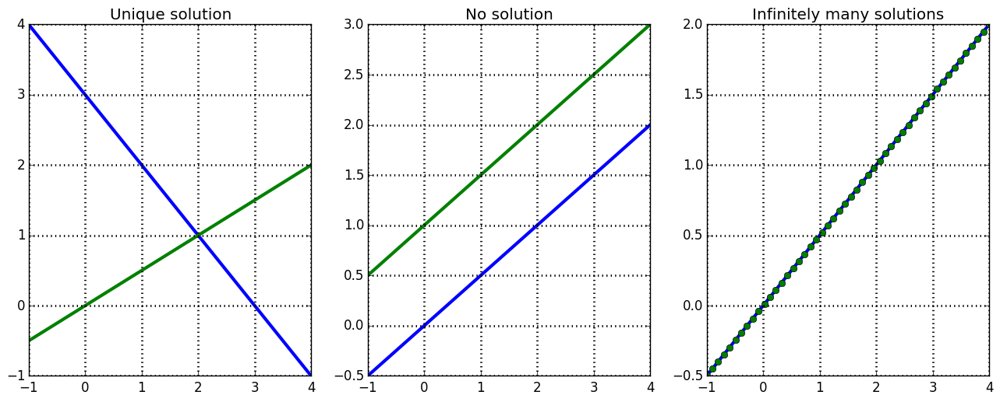
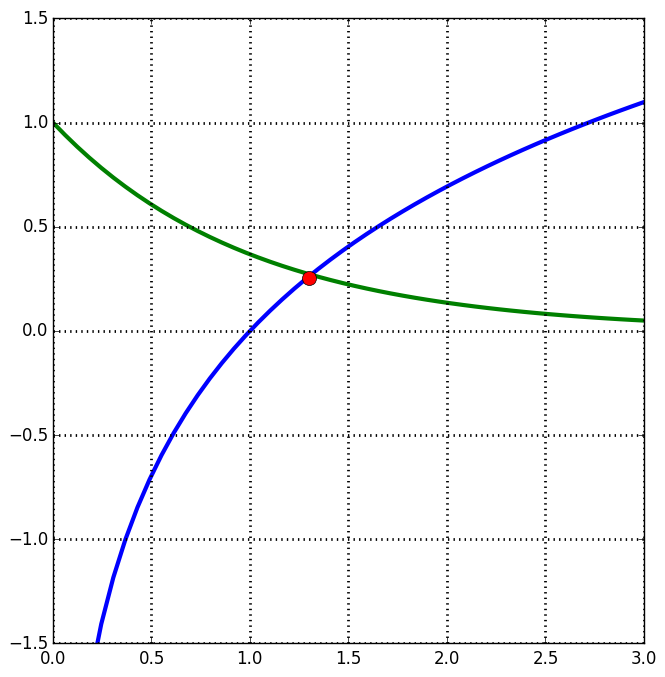

| « 9.4 | up | 10.2 » |
10.1 — Systems of Two Linear Equations
Suppose we have two lines: \begin{align*} y &= \frac{1}{2}x \\ y &= -x + 3 \end{align*} and we want to find a point that satisfies both these equations. Graphically, this means a solution to this system will lie on both lines or is at the intersection of the two lines.
Important: the solution to a two-dimensional system is the 2-D coordinate pair, $(x,y)$.
Types of Solutions to Linear Systems
For linear system of any number of dimensions, there are only 3 possibilities in terms of finding a solution:- 1 unique solution
- No solution
- Infinitely many solutions

Describe the solution type for the system:
\begin{align*}
-x + 2y = 0 \\
-x + 2y = 2
\end{align*}
No solution.
Describe the solution type for the system:
\begin{align*}
-x + 2y = 1 \\
2x - 4y = -2
\end{align*}
Infinitely many solutions.
General Form for a 2-D Linear System
\begin{align*} a_{11}x + a_{12}y &= b_1 \\ a_{21}x + a_{22}y &= b_2 \end{align*} The reason for this form will become apparent when we discuss representing linear systems with matrices.
Describe the solution type for the system:
\begin{align*}
2x + 7y &= -2 \\
-4x - 14y &= 4 \\
\end{align*}
Infinitely many solutions.
Describe the solution type for the system:
\begin{align*}
4x + 4y &= 4 \\
3x + 3y &= 1 \\
\end{align*}
No solution.
Describe the solution type for the system:
\begin{align*}
3x + 8y &= 4 \\
6x - 12y &= -1 \\
\end{align*}
Unique solution.
What does a non-linear system look like?
We only study linear systems in this class. However, consider the following "simple" system which is non-linear: \begin{align*} y &= e^{-x} \\ y &= \ln(x) \end{align*} It's easy to find the solution on the graph, but good luck solving for the solution!